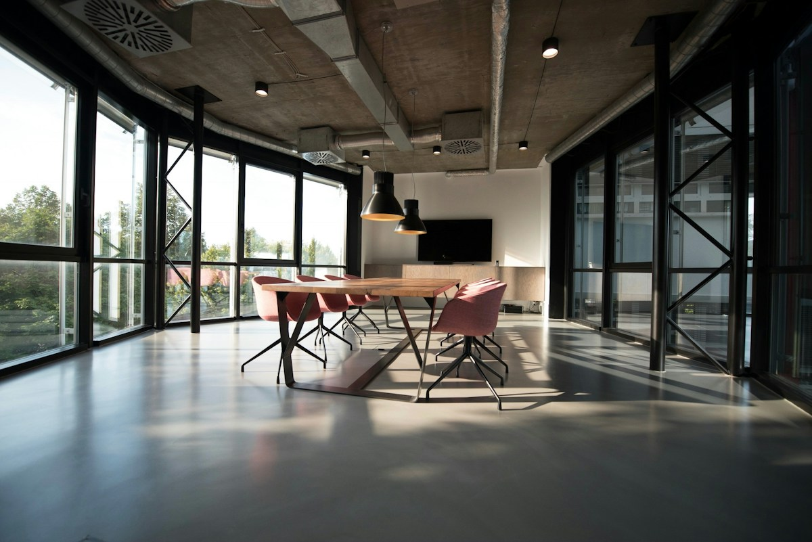

Precisão no cuidado.
Clareza no caminho.
Prepare a primeira avaliação ou organize um retorno definido pelo seu dentista.
Prepare seu primeiro passo.
Escolha uma preferência. A recepção combina o próximo passo.
Um roteiro para
suas perguntas.
Escolha o motivo do contato acima. O roteiro ajuda a conversar com a equipe, sem indicar procedimentos ou substituir a avaliação profissional.
Para o primeiro encontro
Suas marcações são temporárias nesta página. Não registramos dados clínicos nem informações pessoais.
Seu próximo contato,
no tempo combinado.
Se a equipe já orientou um retorno, crie um lembrete pessoal para confirmar a data. A indicação e o intervalo do acompanhamento são definidos pelo profissional.
Você participa de cada etapa.
O encontro começa por compreender seu contexto. Depois da avaliação, o profissional apresenta as possibilidades, explica as etapas e responde às suas perguntas.
Na versão do cliente, este espaço recebe uma história real, retratos autorizados, qualificações verificadas e orientações escritas pela equipe.
Perguntas que
merecem clareza.
O site confirma meu horário?
Não. Esta demonstração prepara apenas uma solicitação fictícia. Na operação real, a recepção confirma disponibilidade, profissional, data, modalidade e local.
Preciso contar detalhes de saúde?
Não. Este formulário é administrativo. Sintomas, diagnósticos, imagens e registros de saúde devem ser tratados no ambiente apropriado com o profissional.
Essa identidade pode ser minha?
Sim. Nome, marca, cores, fotografias, textos, serviços e organização são adaptados ao cliente. As imagens e informações são ilustrativas; não representam um estabelecimento atendido pela Relax Studios.